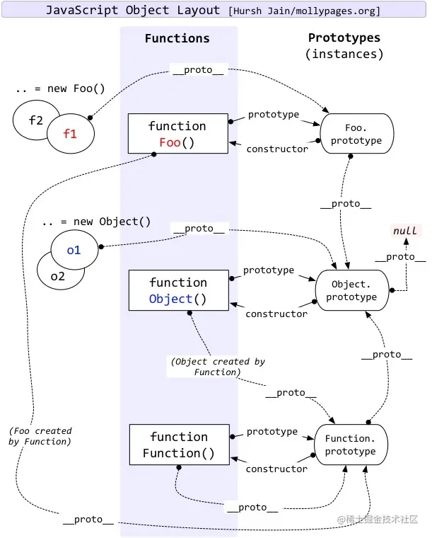

面试题（一）
HTML
行内元素，块状元素
- 行内元素有：
a b span img input select strong - 块级元素有：
div ul ol li dl dt dd h1 h2 h3 h4 h5 h6 p
label作用
label标签来定义表单控件的关系：当用户选择label标签时，浏览器会自动将焦点转到和label标签相关的表单控件上
1 | <!-- 使用方法1 --> |
常用的meta标签有哪些
meta 标签由 name 和 content 属性定义，用来描述网页文档的属性，比如网页的作者，网页描述，关键词等。
常用的meta标签：
charset，用来描述HTML文档的编码类型：
1
<meta charset="UTF-8" >
keywords，页面关键词：
1
<meta name="keywords" content="关键词" />
description，页面描述：
1
<meta name="description" content="页面描述内容" />
refresh，页面重定向和刷新：
1
<meta http-equiv="refresh" content="0;url=" />
viewport，适配移动端，可以控制视口的大小和比例：
1
<meta name="viewport" content="width=device-width, initial-scale=1, maximum-scale=1">
搜索引擎索引方式：
1
<meta name="robots" content="index,follow" />
从输入url到页面上都发生了什么，如何渲染页面。
https://juejin.cn/post/6844904142742224904#heading-1
https://juejin.cn/post/6844903832435032072#heading-6
CSS
position
- static(默认)：正常文档流，无定位
- relative：正常文档流，相对自身定位
- absolute：脱离文档流，相对上级有 position 属性且值不为 static 的元素定位，若没有则相对 body 定位
- fixed：脱离文档流，相对于浏览器窗口定位
- sticky：根据窗口滚动自动切换 relative 和 fixed，由 top 决定
说一下你对盒模型的理解
- 标准模式：元素的真实占位宽高 = content(width,height) + border + padding
- 怪异模式：元素的真实占位宽高 = content(包含border和padding)
CSS box-sizing 属性切换模式：content-box就是标准模式，border-box就是怪异模式
CSS隐藏区别
- visibility:hidden：隐藏元素，会在文档流中占位，隐藏后不能触发点击事件(触发重绘)
- display:none：隐藏元素，会从页面中删除掉(触发重排和重绘)
- opacity:0：透明，会继续在文档流中占位，由于作用于元素自身，所以子元素会继承，全部变透明，透明后可以触发点击事件(触发重绘)
- rgba(0,0,0,0)：透明，会继续在文档流中占位，由于只作用于颜色或背景色，所以子元素不会继承，透明后可以触发点击事件(触发重绘)
回流(重排)与重绘 (Reflow & Repaint)
回流必将引起重绘，重绘不一定会引起回流
- 回流(重排) (Reflow)
当Render Tree中部分或全部元素的尺寸、结构、或某些属性发生改变时，浏览器重新渲染部分或全部文档的过程称为回流。- 重绘 (Repaint)
当页面中元素样式的改变并不影响它在文档流中的位置时（例如：color、background-color、visibility等），浏览器会将新样式赋予给元素并重新绘制它，这个过程称为重绘。
简单总结：会引起元素位置变化的就会reflow；不会引起位置变化的，只是在以前的位置进行改变背景颜色等，只会repaint。
BFC
BFC是什么
BFC 全称：Block Formatting Context， 名为 “块级格式化上下文”。
简单来说就是，BFC是一个完全独立的空间（布局环境），让空间里的子元素不会影响到外面的布局。
触发BFC使用的CSS属性
- float值不为none
- overflow值为auto或hidden
- display值为inline-block、table-cell、flex
- position值为absolute或fixed
BFC特性规则
- BFC元素垂直方向的边距会发生重叠，由 margin 决定
- BFC的区域不会与浮动元素的区域重叠
- BFC是一个独立的容器，子元素不会影响外面元素
- 计算BFC高度的时候，浮动元素也会参与计算
BFC使用场景
高度塌陷
外边距重叠
两栏布局（左边定宽，右边自适应），只需要给右边创建BFC即可
清除浮动
利用BFC清除浮动（父元素）
清除浮动
常见的水平垂直方式
固定宽高
absolute + 负margin
1 | .content { |
absolute + margin auto
1 | .content { |
不固定宽高
absolute + translate
1 | .content { |
flex
1 | .box { |
alt和title的作用及区别
- alt是图片不能正常显示时出现的提示信息
- title是鼠标移到元素上时显示的提示信息
link 和 @import
- link是HTML提供的标签，不仅可以加载 CSS 文件，还可以定义 RSS、rel 连接属性等；@import是CSS提供的语法规则，只有导入样式表的作用
- 加载页面时，link标签引入的 CSS 被同时加载；@import引入的 CSS 将在页面加载完毕后被加载
JavaScript
基本数据类型
8种基础数据类型： Undefined 、 Null 、 Boolean 、 Number 、 String 、 Object 、 Symbol 、 BigInt
其中 Symbol 和 BigInt 是 ES6 新增的数据类型
- Symbol 代表独一无二的值，最大的用法是用来定义对象的唯一属性名。
- BigInt 可以表示任意大小的整数。
数据类型的判断
typeof：能判断所有值类型，函数。不可对 null、对象、数组进行精确判断，因为都返回 object
1
2
3
4
5
6
7
8
9
10
11console.log(typeof undefined); // undefined
console.log(typeof 2); // number
console.log(typeof true); // boolean
console.log(typeof "str"); // string
console.log(typeof Symbol("foo")); // symbol
console.log(typeof 2172141653n); // bigint
console.log(typeof function () {}); // function
// 不能判别
console.log(typeof []); // object
console.log(typeof {}); // object
console.log(typeof null); // objectinstanceof：能判断对象类型，不能判断基本数据类型，其内部运行机制是判断在其原型链中能否找到该类型的原型。
(其实现就是顺着原型链去找，如果能找到对应的 Xxxxx.prototype 即为 true )1
2
3
4
5class People {}
class Student extends People {}
const vortesnail = new Student();
console.log(vortesnail instanceof People); // true
console.log(vortesnail instanceof Student); // trueObject.prototype.toString.call：所有原始数据类型都是能判断的，还有 Error 对象，Date 对象等。
1
2
3
4
5
6
7
8
9
10Object.prototype.toString.call(2); // "[object Number]"
Object.prototype.toString.call(""); // "[object String]"
Object.prototype.toString.call(true); // "[object Boolean]"
Object.prototype.toString.call(undefined); // "[object Undefined]"
Object.prototype.toString.call(null); // "[object Null]"
Object.prototype.toString.call(Math); // "[object Math]"
Object.prototype.toString.call({}); // "[object Object]"
Object.prototype.toString.call([]); // "[object Array]"
Object.prototype.toString.call(function () {}); // "[object Function]"
原型,原型链

- js对象分为：函数对象（Function）和普通对象，每个对象都有隐式原型
__proto__属性，但是只有函数对象才有显式原型prototype属性；__proto__属性是一个对象，它有两个属性，constructor和__proto__；prototype有一个默认的constructor属性，用于记录实例是由哪个构造函数创建。- 隐式原型
__proto__的属性值指向它的构造函数的显式原型prototype属性值
1 | function Person () {} |
https://juejin.cn/post/6844903989088092174
闭包
闭包是指有权访问另一个函数作用域中变量的函数
创建闭包的最常见的方式就是在一个函数内创建另一个函数，创建的函数可以访问到当前函数的局部变量。
常用用途:
- 闭包的第一个用途是使我们在函数外部能够访问到函数内部的变量。通过使用闭包，可以通过在外部调用闭包函数，从而在外部访问到函数内部的变量，可以使用这种方法来创建私有变量。
- 闭包的另一个用途是使已经运行结束的函数上下文中的变量对象继续留在内存中，因为闭包函数保留了这个变量对象的引用，所以这个变量对象不会被回收。
https://juejin.cn/post/6937469222251560990#heading-1
Map和Set的区别
Map字典
- 是一种类对象的数据结构
- 以键值对的形式存储数据
- 存储的数据不会重复
- 数据的键或值可以是任意值或对象
- 存储的数据是有序的
- 初始化的值为二维数组
Set 集合
- 是一个类数组对象
- 存储的数据不会重复
- 不是以键值对的形式存储，而是以
[value，value]的形式 - 初始化的值为一维数组
共同点：集合、字典都可以存储不重复的值
不同点：集合是以[值，值]的形式存储元素，字典是以[键，值]的形式存储
Map和Object的区别
- Object的键只能是String或者Symbols,Map的键可以是任意值(包含函数、对象或任意基本类型)
- Object的键是无序的，Map的key是有序的，当迭代的时候，以插入的顺序返回key值。
- Object使用Object.key(obj).length得到键值对的个数，Map通过size属性可以得到Map中键值对的个数。
0.1+0.2 ! == 0.3
因为 JavaScript 中使用基于 IEEE 754 标准的浮点数运算，0.1 的二进制值是个无限循环小数，而 IEEE 754 标准中的尾数位只能保存 52 位 有效数字，所以精度丢失，所以会产生舍入误差
解决：
- 在计算前将值转换为整数 再进行计算
- 对结果进行位截取后进行比较
跨域的常用方式
跨域
跨域，是指浏览器不能执行其它网站的脚本。它是由浏览器的同源策略造成的，是浏览器对javascript实施的安全限制
所谓同源，就是域名、协议、端口均相同，如下为不同：
1 | http://www.123.com/index.html 调用 http://www.123.com/abc.do （非跨域） |
解决方案
跨域
cors,jsonp
前后端分离vue，react配置代理
map和foreach有什么区别
- forEach()方法不会返回执行结果，而是undefined。而且会修改原来的数组。
- map()方法会得到一个新的数组并返回